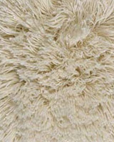

<!DOCTYPE html>
<html>
  <head>
    <meta charset="utf-8">
    <meta http-equiv="x-ua-compatible" content="ie=edge">
    <title>Zefir</title>
    <meta name="description" content="">
    <meta name="viewport" content="width=device-width, initial-scale=1">
    <link rel="stylesheet" href="css/main.css">
  </head>
</html>
<body>
  <div id="nav">
  <ul>
  <li><a href="./">главная</a></li>
  <li><a href="./club.html">клуб</a></li>
  <li><a href="./news.html">новости</a></li>
  <li><a href="./product.html">продуктовка</a></li>
  <li><a href="./product_color.html">продуктовка с цветами</a></li>
  <li><a href="./category_grid.html">категории сетка</a></li>
  <li><a href="./category_slider.html">категории слайдер</a></li>
  </ul>
  </div>
  <header class="line">
    <div class="top-banner">
      <div class="top-banner__inner">
        <ul class="basic-list">
          <li class="basic-list__item -home"><a href="#"></a></li>
          <li class="basic-list__item -mail"><a href="#"></a></li>
          <li class="basic-list__item -map"><a href="#"></a></li>
        </ul>
        <ul class="top-nav">
          <li class="top-nav__item"><a href="#">КОНТАКТЫ</a></li>
          <li class="top-nav__item"><a href="#">О ЗЕФИРЕ</a></li>
          <li class="top-nav__item"><a href="#">ДОСТАВКА И ПРИМЕРКА</a></li>
          <li class="top-nav__item"><a href="#">ОПЛАТА</a></li>
          <li class="top-nav__item"><a href="#">ДИЗАЙНЕРАМ</a></li>
        </ul>
        <ul class="social-list">
          <li class="social-list__item -fb"><a href="#"></a></li>
          <li class="social-list__item -vk"><a href="#"></a></li>
          <li class="social-list__item -tw"><a href="#"></a></li>
          <li class="social-list__item -lj"><a href="#"></a></li>
          <li class="social-list__item -yt"><a href="#"></a></li>
          <li class="social-list__item -houzz"><a href="#"></a></li>
        </ul>
      </div>
    </div>
    <div class="header__inner">
      <div class="contact-info"><a href="#" class="contact-info__phone">+7 (495) 266 46 25</a><a href="#" class="contact-info__mail">info@zefir.ru</a></div>
      <div class="logo"></div>
      <div class="addition-info"><a href="#" class="addition-info__down">скачать электронный каталог</a><a href="#" class="addition-info__club">Вступить в дизайн-клуб</a></div>
      <nav>
        <ul class="main-nav">
          <li class="main-nav__item"><a href="#">Дизайнерские ковры</a></li>
          <li class="main-nav__item"><a href="#">Ковровые покрытия</a></li>
          <li class="main-nav__item"><a href="#">есть в наличии</a></li>
          <li class="main-nav__item"><a href="#">Шоу-рум</a></li>
          <li class="main-nav__item"><a href="#">Сервисы</a></li>
        </ul>
        <form class="search-block">
          <input type="text" class="search-block__input">
          <button type="submit" class="search-block__submit"></button>
        </form>
      </nav>
    </div>
  </header>
  <main class="main-content">
    <header class="page-header">
      <p class="breadcrumbs"><a href="#">Дизайнерские ковры ручной работы</a></p>
      <h1 class="page-title">Купить паласы, современные ковры и дорожки</h1><a href="#" class="category-switch">Показать в виде списка</a>
    </header>
    <div class="category-slider">
      <div class="category-slider__container -slick">
        <div class="category-slider__item">
          <div class="item__image"><a href="#"></a></div>
          <p class="item__title"><a href="#">Danielle orchid</a></p>
          <p class="item__desc">Основой идеи дизайнерского ковра «Danielle orchid» послужила орхидея - символ нежности, совершенства.</p>
        </div>
        <div class="category-slider__item">
          <div class="item__image"><a href="#"></a></div>
          <p class="item__title"><a href="#">Ковер "Fire &amp; Ice Smoke"</a></p>
          <p class="item__desc">В идею дизайнерского ковра "Fire &amp; Ice Smoke" легли Огонь и Лед - как символы сильнейших состояний двух стихий</p>
        </div>
        <div class="category-slider__item">
          <div class="item__image"><a href="#"></a></div>
          <p class="item__title"><a href="#">Ковер "Autumn Natural"</a></p>
          <p class="item__desc">Яркий дизайнерский ковер "Autumn Natural" напоминает картину художников эпохи импрессионизма</p>
        </div>
        <div class="category-slider__item">
          <div class="item__image"><a href="#"></a></div>
          <p class="item__title"><a href="#">Danielle orchid</a></p>
          <p class="item__desc">Основой идеи дизайнерского ковра «Danielle orchid» послужила орхидея - символ нежности, совершенства.</p>
        </div>
        <div class="category-slider__item">
          <div class="item__image"><a href="#"></a></div>
          <p class="item__title"><a href="#">Ковер "Fire &amp; Ice Smoke"</a></p>
          <p class="item__desc">В идею дизайнерского ковра "Fire &amp; Ice Smoke" легли Огонь и Лед - как символы сильнейших состояний двух стихий</p>
        </div>
        <div class="category-slider__item">
          <div class="item__image"><a href="#"></a></div>
          <p class="item__title"><a href="#">Ковер "Autumn Natural"</a></p>
          <p class="item__desc">Яркий дизайнерский ковер "Autumn Natural" напоминает картину художников эпохи импрессионизма</p>
        </div>
        <div class="category-slider__item">
          <div class="item__image"><a href="#"></a></div>
          <p class="item__title"><a href="#">Danielle orchid</a></p>
          <p class="item__desc">Основой идеи дизайнерского ковра «Danielle orchid» послужила орхидея - символ нежности, совершенства.</p>
        </div>
        <div class="category-slider__item">
          <div class="item__image"><a href="#"></a></div>
          <p class="item__title"><a href="#">Ковер "Fire &amp; Ice Smoke"</a></p>
          <p class="item__desc">В идею дизайнерского ковра "Fire &amp; Ice Smoke" легли Огонь и Лед - как символы сильнейших состояний двух стихий</p>
        </div>
        <div class="category-slider__item">
          <div class="item__image"><a href="#"></a></div>
          <p class="item__title"><a href="#">Ковер "Autumn Natural"</a></p>
          <p class="item__desc">Яркий дизайнерский ковер "Autumn Natural" напоминает картину художников эпохи импрессионизма</p>
        </div>
      </div>
      <div class="category-slider__prev big-arrow prev-arrow"></div>
      <div class="category-slider__next big-arrow next-arrow"></div>
    </div>
    <div class="category-desc">
      <h2>Авторские ковры – жемчужина интерьера</h2>
      <p>Авторские ковры являются одним из ключевых элементов современного дизайна интерьера. Восхитительные дизайнерские ковры придают помещению стиль и характер, делают пространство полностью индивидуальным, создавая непередаваемую атмосферу и настроение каждого конкретного дома. Ковер ручной работы, созданный по индивидуальному дизайну, станет центральной деталью интерьера дорогих и роскошных домов.</p>
      <p>Интернет-магазин «ЗЕФИР Ковровая Коллекция» предлагает огромный ассортимент авторских ковров премиум-класса. Именно здесь можно выбрать великолепный дизайнерский ковер для украшения своего дома. В богатой коллекции представлены оригинальные ковры – это настоящие шедевры современного искусства ковроделия, которые создают мастера Тибета, Непала и Индии по эскизам знаменитых дизайнеров мира. В коллекцию входят ковры в комнату и в офис, ковры для модных лофтов и загородного жилья. Авторские ковры – это идеальное сочетание высокого качества, превосходных натуральных материалов и оригинального дизайна. Наши эксперты вот уже 20 лет выбирают лучше ковры для коллекции, которая полностью представлена в нашем интернет-магазине.</p>
      <h2>Как же выбрать авторский ковер для своего дома?</h2>
      <p>Выбрать и купить ковер ручной работы – занятие непростое, но очень увлекательное. Вначале стоит определиться со стилем интерьера, для которого выбирается дизайнерский ковер. Следует помнить, что лучшие авторские работы могут украшать не только полы, но и стены помещений. Ковры на стену, как и картины художников, отличаются необычными цветовыми решениями.</p>
      <p>Определите, какое место в помещении займет авторский ковер. Яркие краски и смелый рисунок ковра, несомненно, станут центром внимания и предметом восхищения гостей – цветные ковры весьма популярны среди представителей творческих профессий. Ковры, выполненные в пастельных, неброских тонах, идеально подойдут для того, чтобы стать завершающим элементом в целостной концепции интерьера. Цвет, размер, форма и стоимость авторского ковра – немаловажные факторы для принятия решения о покупке. Современная мода представляет овальные ковры, круглые ковры, а также квадратные, прямоугольные или ковры любой другой геометрической формы. Наиболее популярны в современном мире сейчас ковры, о которых речь пойдет ниже.</p>
      <ul class="carpet-list">
        <li class="carpet-list__item">
          <div class="item__image"><a href="#"></a></div>
          <div class="item__desc">
            <h3><a href="#">Персидские ковры</a></h3>
            <p>Персидские ковры – классика жанра и первая ассоциация с идеей роскошного и дорогого ковра. Коллекционеры приобретают персидские ковры не только для того, чтобы украсить им гостиную, но и в качестве выгодного вложения – потому что эти шедевры со временем становятся только дороже. Персидские ковры на пол или на стену станут символом роскоши и богатства дома.</p>
          </div>
        </li>
        <li class="carpet-list__item">
          <div class="item__image"><a href="#"></a></div>
          <div class="item__desc">
            <h3><a href='#'>Циновки</a> и <a href='#'>натуральные ковры</a></h3>
            <p>Экостиль стал невероятно популярным при создании современных интерьеров в стиле этно, минимализм, хайтек. Новому дому, созданному по последнему слову экологичного дизайна, идеально подойдут натуральные ковры из таких необычных материалов, как бамбук, лен, хлопок. Также весьма популярны циновки из сизаля – оригинальные и модные покрытия по относительно невысокой цене. Интернет-магазин «ЗЕФИР Ковровая Коллекция» также предлагает ковры на пол, созданные из необычных материалов - конопли, крапивы, бананы, морского тростника.</p>
          </div>
        </li>
        <li class="carpet-list__item">
          <div class="item__image"><a href="#"></a></div>
          <div class="item__desc">
            <h3><a href="#">Шерстяные ковры</a></h3>
            <p>Ковры из натуральной высококачественной шерсти сегодня ценятся так же высоко, как и сотни, и тысячи лет назад. Сейчас шерстяные напольные ковры украшают интерьеры модных квартир, загородных домов и роскошных креативных офисов. Из материалов для таких ковров больше всего ценится шерсть новозеландской овцы.</p>
          </div>
        </li>
        <li class="carpet-list__item">
          <div class="item__image"><a href="#"></a></div>
          <div class="item__desc">
            <h3><a href="#">Шелковые ковры</a></h3>
            <p>Авторские ковры из шелка или с добавлением шелковых нитей придают ковру очарование и нежность. Внешний вид шелковых ковров отличает мягкое сияние, присущее дорогим тканям. Создание такого ковра – долгий и трудоемкий процесс – над ним работают лучшие мастера мира. Цена на такой ковер, соответственно, тоже не будет низкой.</p>
          </div>
        </li>
        <li class="carpet-list__item">
          <div class="item__image"><a href="#"></a></div>
          <div class="item__desc">
            <h3><a href="#">Ковры с длинным ворсом</a></h3>
            <p>Ковры с длинным ворсом и ковры шегги отличаются особенной мягкостью и великолепной текстурой. Такие ручные ковры помогут создать незабываемую атмосферу уюта и тепла в доме. Они отлично подходят для гостиных, детских и спален.</p>
          </div>
        </li>
        <li class="carpet-list__item">
          <div class="item__image"><a href="#"></a></div>
          <div class="item__desc">
            <h3><a href="#">Индийские ковры</a></h3>
            <p>Индийские ковры характеризуются ярким восточным рисунком, игрой красок и нестандартными художественными решениями. Радость и энергия Индии воплощается в узоре такого необычного ковра.</p>
          </div>
        </li>
        <li class="carpet-list__item">
          <div class="item__image"><a href="#"></a></div>
          <div class="item__desc">
            <h3><a href='#'>Ковры из Тибета</a> и <a href='#'>Непала</a></h3>
            <p>Тибетские ковры – это 100% кропотливая ручная работа. Мастера ткут эти ковры по древней узелковой технологии в одном из сакральных центров мира - величественных высокогорьях Гималаев. Рисунки ковров олицетворяют покой и умиротворение, просветление и спокойствие. Тибетские мастера ковроделия работают и в Непале. Напольные и настенные ковры создаются в Непале по древним тибетским технологиям.</p>
          </div>
        </li>
        <li class="carpet-list__item">
          <div class="item__image"><a href="#"></a></div>
          <div class="item__desc">
            <h3><a href="#">Детские ковры</a></h3>
            <p>Детские ковры отличаются яркой палитрой, забавными узорами и интересными рисунками и высочайшим качеством материалов. Часто для такого ковра используются натуральное сырье – шерсть, которая не только дарит мягкость и уют, но и защищает малыша от простуд, обеспечивая отличную теплоизоляцию. Детские напольные ковры помогают создать веселую и легкую атмосферу в комнате ребенка.</p>
          </div>
        </li>
      </ul>
      <h2>Где купить?</h2>
      <p>Сегодня Интернет магазины паласов предлагают огромный выбор изделий на любой вкус.</p>
      <p>Удобнее всего купить паласы и ковры через наш магазин, в котором Вы сможете просмотреть большое количество товаров, выбрать нужный Вам стиль, дизайн и материал, размер, посмотреть фото. И когда Вы поймете что Вам нужно, то можете выбрать оптимальные цены на ковры и паласы, согласовав размер и содержание с нашими менеджерами. После оформления заказа мы привезем его Вам домой, где Вы сможете положить его в свой интерьер и окончательно убедиться, что он Вам подходит. После этого Вы уже можете сделать покупку, расплатившись с водителем-курьером. В этом отношении интернет магазин паласов на много удобнее.</p>
      <p class="desc-author">автор: <a href='#'>Екатерина Адитярова</a></p>
    </div>
    <div class="category-links"><a href="#">Все ковры</a><a href="#">Ковры 2015</a></div>
  </main>
  <footer>
    <div class="footer-wrap">
      <div class="footer-item">
        <p class="footer-item__title">Поддержка клиентов:</p>
        <ul class="footer-item__list">
          <li><a href="#">Контакты</a></li>
          <li><a href="#">Скачать электронный каталог</a></li>
          <li><a href="#">Заказать образцы и каталоги</a></li>
          <li><a href="#">Уход за коврами и  ковровыми<br>покрытиями</a></li>
          <li><a href="#">Часто задаваемые вопросы</a></li>
          <li><a href="#">Авторские права и политика<br>конфиденциальности</a></li>
        </ul>
      </div>
      <div class="footer-item">
        <p class="footer-item__title">Предоставляемые сервисы:</p>
        <ul class="footer-item__list">
          <li><a href="#">Консультации</a></li>
          <li><a href="#">Выезд специалиста с образцами</a></li>
          <li><a href="#">Примерка ковров</a></li>
          <li><a href="#">Замер помещения и расчет<br>покрытия</a></li>
          <li><a href="#">Установка ковровых покрытий</a></li>
          <li><a href="#">Доставка ковров и покрытий</a></li>
        </ul>
      </div>
      <div class="footer-item">
        <p class="footer-item__title">Стать партнером:</p>
        <ul class="footer-item__list">
          <li><a href="#">Для частных дизайнеров,<br>архитекторов и декораторов</a></li>
          <li><a href="#">Для дизайнерских компаний,<br>архитектурных бюро</a></li>
          <li><a href="#">Для магазинов ковров и покрытий</a></li>
          <li><a href="#">Для мебельных магазинов</a></li>
          <li><a href="#">Для интерьерных компаний</a></li>
        </ul>
      </div>
      <div class="footer-item">
        <p class="footer-item__title">ЗЕФИР в мире:</p>
        <ul class="footer-item__list">
          <li><a href="#">В журналах</a></li>
          <li><a href="#">На ТВ</a></li>
          <li><a href="#">Аккаунт Facebook</a></li>
          <li><a href="#">Аккаунт HOUZZE</a></li>
          <li><a href="#">Канал Youtube</a></li>
          <li><a href="#">Аккаунт LJ</a></li>
          <li><a href="#">Аккаунт Twitter</a></li>
          <li><a href="#">Аккаунт "В Контакте"</a></li>
          <li><a href="#">Аккаунт  Google+</a></li>
        </ul>
      </div>
      <div class="footer-item">
        <p class="footer-item__title">О ЗЕФИРЕ:</p>
        <ul class="footer-item__list">
          <li><a href="#">История</a></li>
          <li><a href="#">Миссия</a></li>
          <li><a href="#">Портфолио</a></li>
          <li><a href="#">Отзывы</a></li>
          <li><a href="#">Вакансии</a></li>
          <li><a href="#">Контакты</a></li>
          <li><a href="#">Карта сайта</a></li>
        </ul>
      </div>
    </div>
    <p class="footer-rights">© 2011–2015 «ЗЕФИР Ковровая Коллекция»</p>
    <div class="footer-count"><a href="#"></a></div>
  </footer>
  <div class="callback">
    <div class="callback-call"><a href="#"></a></div>
    <div class="callback-question"><a href="#"></a></div>
  </div>
  <script src="//code.jquery.com/jquery-1.12.0.min.js"></script>
  <script src="js/main.js"></script>
</body>